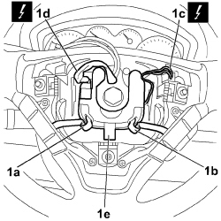

5505A41 STEERING WHEEL CONTROL UNIT DIGITAL NETWORK NODE - R.R.
- Path
- Procedures > 55 ELECTRICAL EQUIPMENT > 5505 INSTRUMENT/GAUGE ELECTRICAL CIRCUITS > 5505A MULTI-FUNCTION COMPONENTS > 5505A41 STEERING WHEEL CONTROL UNIT DIGITAL NETWORK NODE - R.R.
- Kind
- repair procedure (removal / refitting; the operation number is the code)
- Applies to
- all engines; all production periods
- Interactive page
- https://sloeber94.github.io/elrnDB-fCrm/en/#/194000674
Applies to: all engines; all production periods
- Turn the ignition key to the OFF position and extract it.
- Disconnect the negative and positive battery terminals and insulate them.
- Wait for 10 minutes before continuing.
Description | Connector | |
|---|---|---|
BATTERY |
Applies to: all engines; all production periods
 Removing
Removing
 Refitting
RefittingOp. 5580C18 AIR BAG MODULE - R+R
1. Disconnect the electrical connections (1a) for the Connect panel control module (1b) and the radio control module, then disconnect the electrical connections (1c), (1d) and remove the digital network node control unit (1e) from the steering wheel.
Description | Connector | |
|---|---|---|
1c | SINGLE TONE HORN |
Description | Connector | |
|---|---|---|
1d | STEERING WHEEL NODE CONTROL UNIT (NVO) |

Applies to: all engines; all production periods
Refitting
Removing- Position the control unit in the housing on the steering wheel.
- Connect the electrical connections.
Description | Connector | |
|---|---|---|
SINGLE TONE HORN |
Description | Connector | |
|---|---|---|
STEERING WHEEL NODE CONTROL UNIT (NVO) |
Op. 5580C18 AIR BAG MODULE - R+R
- Connect the battery terminals.
Description | Connector | |
|---|---|---|
BATTERY |